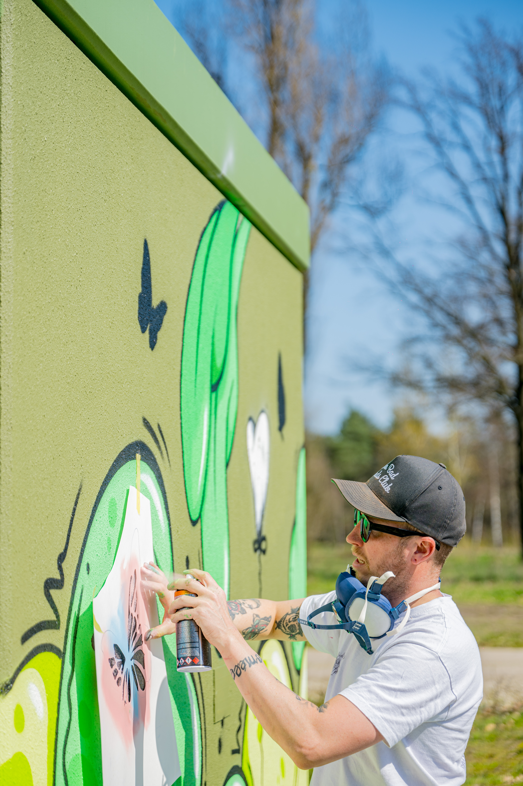
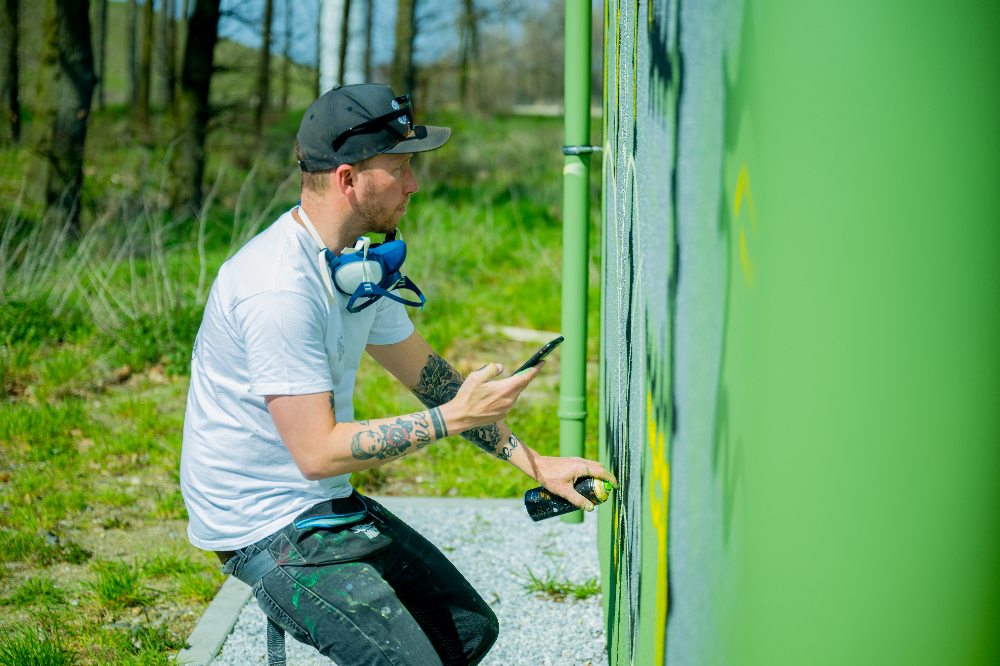
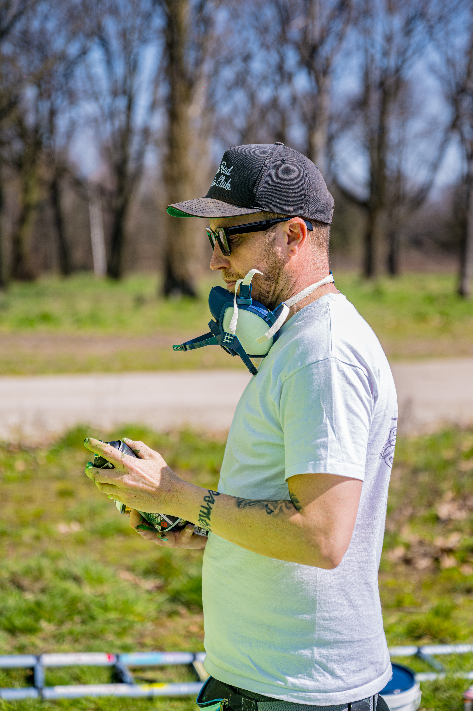
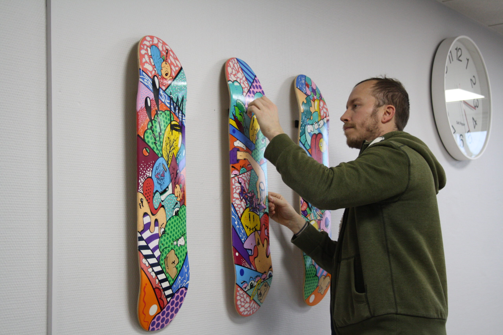

Make it visible.
Bright colour is never decoration only. It gives a place, object or idea a pulse.
About me
Philippe Vroonen. Self-taught artist. Colour chaser. Professional troublemaker.
I was born and raised in Tongeren and adopted by Alt-Hoeselt. My work moves between murals, objects, shoes, workshops and anything else that can carry a little more colour.

made by handThe short version
I’m a self-taught artist with a strong, colourful graphic style. It’s the common thread running through everything I make: vivid palettes, imperfect proportions, asymmetry and characters that refuse to stand still.
I grew up with punk, hip-hop, graffiti and skateboarding. After school I trained as a cook and learned my trade with chefs such as Peter Goossens and Hans van Wolde. That world taught me discipline, work ethic and the courage to do things my own way.
After the birth of my first daughter, I chose a different rhythm. I picked up my old love for graffiti and drawing again — this time as a legal, colourful good dad. My first steps into this new world started when I customised a pair of shoes for my daughter.



The Flipka mindset
Bright colour is never decoration only. It gives a place, object or idea a pulse.
I like materials, surfaces and techniques to collide until something new appears.
Illustrator, Photoshop, paint, stickers or a wall: every medium opens another door.
Let’s make something unexpected
If you can draw on it, build it, wear it or walk past it, there’s probably a way to make it more Flipka.
Start a conversation